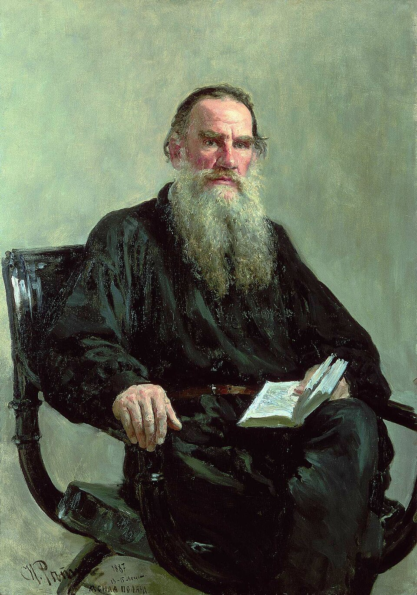
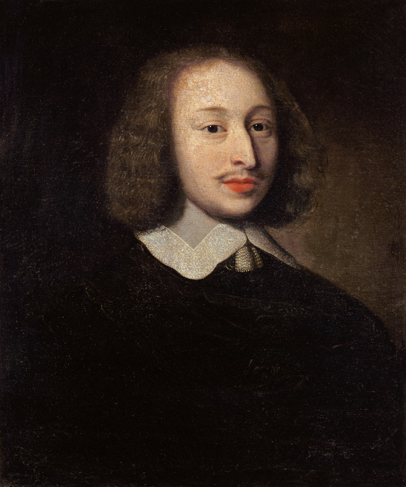

Meaning of Life

The meaning of life is a key concept within Tolstoy’s Anna Karenina, which many protagonists face inner turmoil over. Tolstoy himself, during his lifetime, was battling with this concept; he was particularly concerned with answering one of Kant’s three questions: “What can we hope for?” Thus, deconstructing the different ways in which Tolstoy engages with the meaning of life in Anna Karenina can help us better understand his personal perspective on the matter.
In 1876, Tolstoy was intrigued by Pascal’s essays on “the silent and invisible presence of divinity in the world” (Medzhibovskaya 168). This influenced Tolstoy to begin searching for God (whom Pascal suggested was concealed) in various places, such as “forest clearings, in churches, within the family, at his writing desk…” (Medzhibovskaya 168). During this time, Tolstoy wrote a letter to his wife, Alexandrine, in which he confessed that he had “stopped believing in philosophy” and was still struggling to wholeheartedly believe in prayer (Medzhibovskaya 168). However, it was this very struggle to believe that later certified his faith. Tolstoy wrote, “I was also glad to hear your opinion (if I’ve understood it correctly) that sudden conversions rarely or never happen, but that one can pass through work and suffering” (Medzhibovskaya 169). This led to Tolstoy’s epistemology of faith as “I search, struggle, and grieve; therefore God exists” (Medzhibovskaya 169).
However, knowledge of God’s existence did not spell the end of Tolstoy’s search for meaning. Although Tolstoy initially agreed with Kant that “God’s existence cannot be proven,” he nevertheless searched for Him. In Tolstoy’s A Confession, he qualifies ignorance, Epicureanism, Stoicism, and pessimism as insufficient justifications for life and comes to the epiphany that establishing a relationship with God may itself be a justification for living. Tolstoy wrote, “Once I know God, I live, once I forget him, stop believing in him, I die. This is not a concept but life. To know God and to live is one and the same. God is life” (Medzhibovskaya 170). Furthermore, Tolstoy rejected the idea that the Christian religion was a faith—instead, he believed it to be more of a conviction and that faith “is what would not be at loggerheads with reasonable explication or doubt” (Medzhibovskaya 173). His definition of faith had much in common with that of Kant and Hegel, who distinguished between true faith (Glaube) and “less reliable forms of variance and opinion” (Meinung) (Medzhibovskaya 173).
The most notable seekers for life’s meaning in Anna Karenina are Anna and Levin. Tolstoy is most preoccupied with describing the inner turmoil (over life’s meaning) of both of these characters, which leads one to suicide and the other to a revival of sorts.
Towards the beginning of the novel, we see Anna’s disillusionment with life. As she rides the train from Moscow back to St. Petersburg, she loses herself in the plot of a romance novel and wishes her life could bear much of the same passion and love. After entering a relationship with Vronsky, losing connection to Seryozha, and being chastised by society, Anna’s sole reason to live becomes Vronsky’s love. After an argument with Vronsky, she exclaims, “I want love, and it is not there. Therefore it is all over…” (Tolstoy 746). As her mental state deteriorates, and Anna places more doubt on Vronsky’s love for her, the narrator says that “she saw it all clearly in that penetrating light that now revealed to her the meaning of life and human relations” (Tolstoy 765). In the scenes leading up to her suicide, Anna seemingly comes to revelations about the meaning of life, such as that “hatred and the struggle to survive are the only things that connect people” (Tolstoy 764). However, there is a clear irony in Anna discovering the meaning of life right before taking her own life, suggesting that she was unable to find such meaning under the circumstances of her lifestyle.
Levin, on the other hand, is able to find meaning in his life in the final sequences of the novel. Similar to Tolstoy, philosophy or scientific analysis is insufficient as a “guide to life” for Levin (Tolstoy 790). It is only once Levin has the epiphany (through his conversation with Fyodor) that one must live by “obeying the truth” and “obeying God’s will” that he finds meaning in the ongoing struggles of life.

Works Cited
- Medzhibovskaya, Inessa. Tolstoy and the Religious Culture of His Time. Lexington Books, 2008, pp. 161–197.
- Tolstoy, Leo. Anna Karenina. Translated by Rosamund Bartlett, Oxford University Press, 2014.